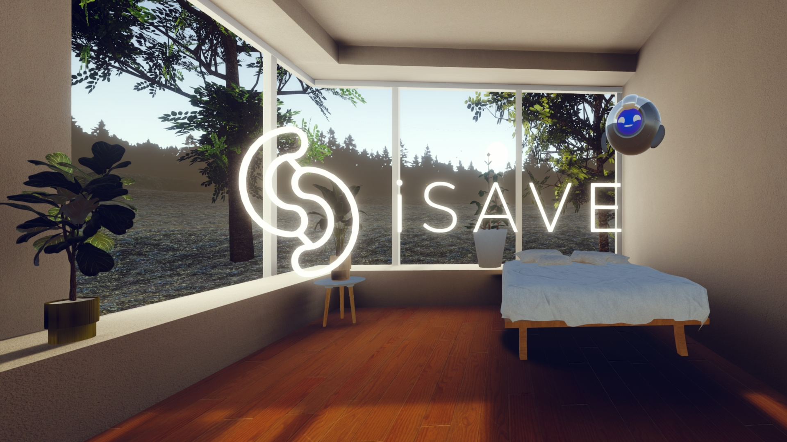

iSAVE
The MRI scanning experience aims to alleviate anxiety and claustrophobia in individuals undergoing MRI scans. The simulation room, based on an existing room at Derriford Hospital in Plymouth (UK), provides a realistic environment for users. This simulation allows users to experience entering the MRI scanner, hear the sounds, and simulate the full scanning process, ultimately preparing them for the actual procedure. Additionally, the simulation includes a gamified stillness measurer that monitors head movement. The stillness measurer utilizes a green-to-red light system, where the lights turn red and emit a continuous beep if the user moves their head too much. The goal of the stillness measurer is to encourage users to maintain the correct position during the simulation and, in turn, improve their ability to remain still during an actual MRI scan.
In this project, I was responsible for both the design and development of the experience. My work included crafting the user's narrative journey, assisting with designing the companion that guides them, and creating the surrounding environment. I also developed the interaction mechanics, scene management system, and the adaptive features that respond in real time if the user begins to feel stressed or overwhelmed.